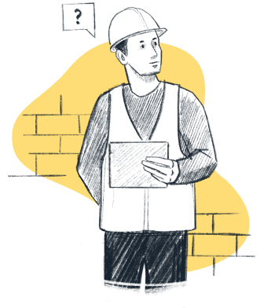

Повышение эффективности
Эффективные проекты стоят дешевле и завершаются в срок.
Снижение потерь
Тщательно отслеживайте движение стройматериалов, чтобы избежать краж и повреждений.
Повышение безопасности
Обеспечьте здоровье и благополучие людей, работающих на вашей площадке.
Строительство - это хаос
Хаос может быть удивительной творческой силой, воздвигающая новые здания из пыли. Хаос вызывает несчастные случаи, задержки и потери. Он вводит проекты в стресс и разочарование. Это означает, что вы действительно не контролируете ситуацию.

Пора навести порядок на вашей стройплощадке и взять под контроль свой проект
Мы заботимся о доставке на стройплощадку и о людях, которые на них рассчитывают
Мы знаем всё о гордости от сияющего нового здания. Нам также известно всё о разочаровании от попыток завершить проект в срок и в рамках бюджета.
Мы здесь, чтобы помочь.


Что такое СтройКонтроль?
СтройКонтроль - это интеллектуальная система управления доставкой, предоставляющая информацию и контроль материалов на сложных строительных площадках в режиме реального времени.
Отслеживайте доставку по всей цепочке поставок
От поставщика до субподрядчика - вы всегда знаете, где находятся ваши материалы, благодаря чему обычные отходы уходят в прошлое и сокращаются несчастные случаи на месте.


Оптимизируйте и контролируйте свое прибытие на место
Транспортные средства доставки прибывают в фиксированные промежутки времени в заранее назначенные отсеки, где разгрузочное оборудование готово и ждет их.
Возьмите под контроль данные в режиме реального времени
Интеллектуальная отчетность дает вам возможность принимать решения в зависимости от того, как обстоят дела в данный момент. Больше никаких ручных отчетов по заливке бетона или ежемесячной проверки 10.000 накладных со счетами, все это доступно онлайн без каких-либо усилий.

Доставка стала проще
Мы позаботимся обо всех ваших различных поставках и их многочисленных специализированных требованиях к разгрузке.
Бетон
Поставки бетона точно планируются, а его состояние контролируется, что обеспечивает максимально возможное время для установки.
Утилизация отходов
Отходы контролируются и сортируются, а заполненность контейнеров отслеживается в цифровом виде.
Опалубка
Вся опалубка отслеживается от прибытия до отправления, а ее состояние контролируется, что сводит к минимуму потери и повреждения.
Сборные панели
Сборные панели прибывают по очереди, их хранение на месте отслеживается, а их установка планируется и контролируется.
Фасады
Элементы фасада поступают последовательно, их сборка контролируется, а перемещение отслеживается.
Отделка
Материалы поступают точно в срок, маркируются и детально отслеживаются для установки.
Строительные леса
Строительные леса отслеживаются от получения до хранения, использования и возврата, поэтому всегда ясно, что на месте и где.
Оборудование
Оборудование и операторы гарантированно доступны в случае необходимости, а их рабочее состояние отслеживается.
Электрика и сантехника
Доставка осуществляется в точной последовательности для сложной установки, что сокращает или устраняет необходимость в хранении.
Надёжность
Благодаря надёжному строительству выигрывают все - муниципальные органы выполняют свои обязанности перед гражданами, инвесторы получают сертификаты своих проектов, а генеральные подрядчики получают повышенную репутацию.
Сниженное загрязнение
При оптимизации логистики требуется меньше поездок, что приводит к снижению выбросов CO2. Выбрасываемый CO2 контролируется, что позволяет ставить цели и вносить ощутимые улучшения.
Улучшенное управление отходами
Упрощается сортировка отходов, автоматизируется утилизация отходов, а поврежденные материалы при необходимости используются повторно, что снижает затраты и стимулирует переработку и повторное использование.
Улучшенное влияние на общество
Уменьшаются проблемы с дорожным движением и шумовое загрязнение, что улучшает жизнь местного сообщества. Улучшенное обращение с материалами и хранение означает, что рабочие также лучше защищены.
Создан для строительства
-
Хорошо виден в любых условиях
Независимо от того, солнечно или темно, найдется подходящий режим экрана
-
Поддержка международных языков
На современной стройке работают люди со всего мира. Язык не является проблемой для СтройКонтроля.
-
Работает на любом устройстве - мобильном телефоне, планшете, ноутбуке
Люди на разных должностях используют разные устройства. СтройКонтроль автоматически настраивается в соответствии с требованиями. Вы также можете проецировать панели мониторинга живого проекта на настенные экраны.
Привлечение субподрядчика
Для выполнения этой работы вам понадобятся ваши субподрядчики. У нас есть проверенный и надежный процесс для этого.
Привлечены ключевые поставщики
У нас уже есть ключевые поставщики, использующие программное обеспечение, что обеспечивает еще больший контроль и прозрачность информации.
100% соответствие
У нас есть безупречный список обеспечения соответствия требованиям, которые необходимы вам для успешного выполнения проекта с помощью СтройКонтроль.
Как с нами работать
Начать работу со СтройКонтроль легко, достаточно заказать демо-версию.
-
Заказать демо
Вы увидите презентацию, в которой подробно объясняется, как работает СтройКонтроль для решения задач строительной логистики в таких сложных проектах, как ваш.
-
Согласование сделки
Мы обсудим ваш строительный проект и предложим реализацию СтройКонтроль, которая идеально соответствует вашим потребностям и будет иметь для вас ценность.
-
Подготовка
Мы полностью обучаем вашу команду тому, как использовать систему, с помощью онлайн-видеоуроков и обеспечиваем постоянную всестороннюю поддержку.
-
Внедрение и интеграция
Мы настраиваем программное обеспечение так, чтобы оно точно моделировало вашу площадку, а затем помогаем вам интегрировать его с программным обеспечением Business Intelligence для получения новых мощных аналитических данных.
Почему нужно выбрать нас?
В строительной логистике всегда есть возможности для улучшения.
Отмеченное наградами ПО
Всемирно известное программное обеспечение, признанное государственными учреждениями, инновационными группами и техническими организациями
Большой потенциал
Входит в топ-25 самых многообещающих стартапов ConTech по версии Cemex Ventures, Moscow Consulting Group, BuiltWorld и PwC
Выбор лидеров рынка
Рекомендуемый поставщик технологий для 3 из 10 ведущих генеральных подрядчиков в Европе
Устойчивое развитие и безопасность
Способствует снижению выбросов CO2 и повышает безопасность на месте
Мы видим огромный потенциал в таких решениях, как СтройКонтроль, и хотим использовать их для улучшения наших строительных процессов.

50 лучших
инструментов
ConTech

25 лучших
стартапов
ConTech в ЕС

50 лучших
стартапов Global
ConTech

2018 - 50 лучших
стартапов ЕС
PropTech